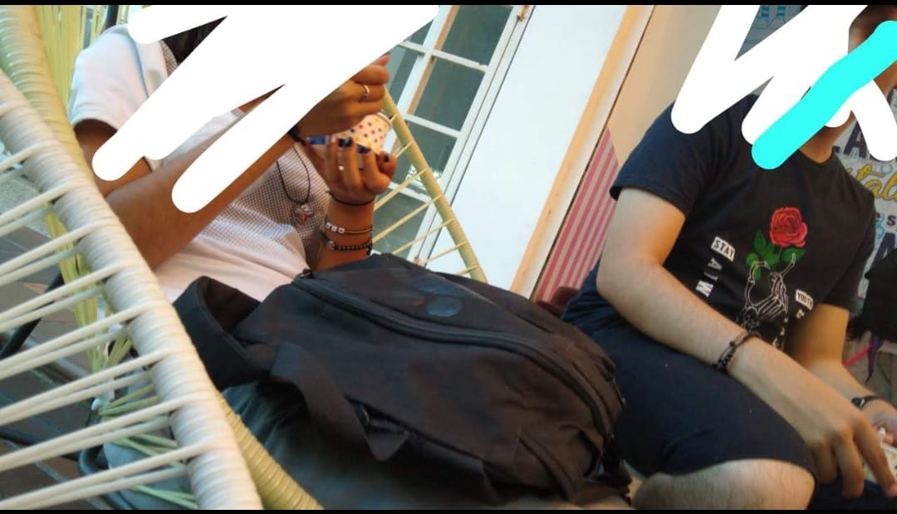
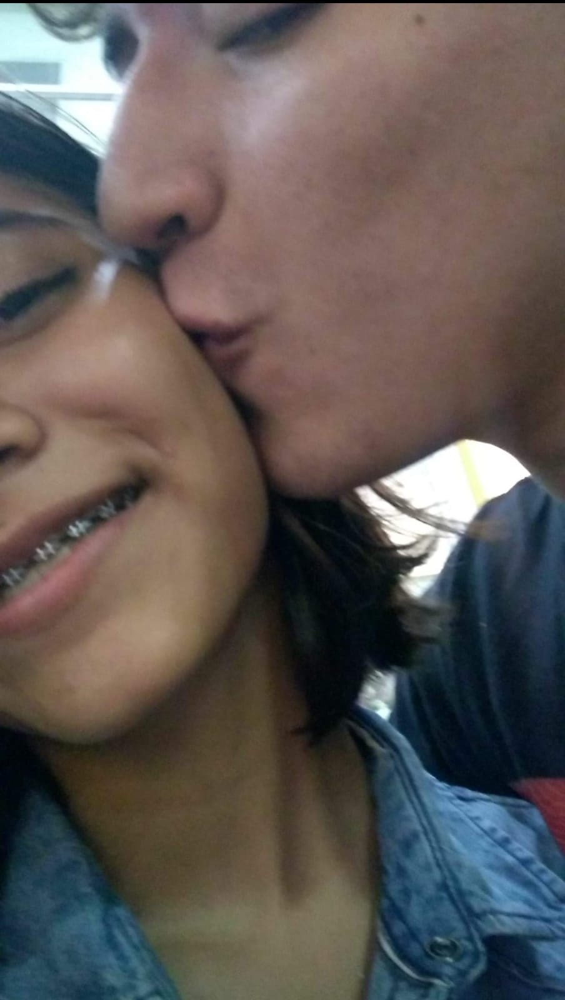

Nuestra primera foto <3
Aún recuerdo nuestra etapa del colegio, dos tortolitos enamorados, pasando todo el tiempo juntos
y haciendo cosas que no eran adecuadas en el colegio xd solo queriamos pasar el mayor tiempo posible
el uno con el otro.
Exisitieron muchos miedos, pero todos esos miedos se desvanecian al estar de nuevo juntos, en el calor de un
abrazo o en el roce de nuestros labios... Nada parecia importar, solo nosotros dos.
Siempre recordaré mi etapa de colegio con un amor gigante porque ahí fue que te conocí. El sentir que tu miraba
me vigilaba mientras estaba en el patio, solo me hacia sonrojar, saber que alguien estaba tan enamorado de mí,
me parecía imposible pero, mis dudas se aclaraban a medida que pasaba el tiempo, por tu manera de ser conmigo,
siempre amable, siempre atenta, siendo tan dulce, que me parecía increible que fuera cierto lo que vivia.
Te lo he dicho muchas veces y lo repito, una mujer se enamora por como es tratada, con amor, con dulcura y con
cariño, y tú me enamoraste de esa manera. Es lo que mas amo de tí. (A parte de la lealtad, exclusividad y demás, claro esta,
no se tiene que decir xd)

Encontré estas otras dos fotitos

Anhelo que nunca dejes de verme con esos ojos llenos de amor y admiración

Y sigamos siendo esos dos tortolitos enamorados